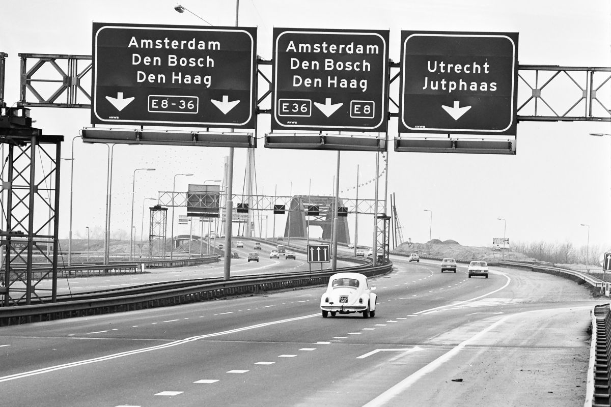
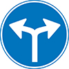
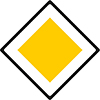

Bureau RJ
Welkom bij Buro RJ: Uw Expert in Bewegwijzering
Ontdek onze jarenlange ervaring en expertise in het ontwerpen en implementeren
van zowel tijdelijke als permanente bewegwijzeringssystemen.
Als toonaangevende verkeersspecialist zijn we gespecialiseerd in bewegwijzering,
een essentieel element voor een soepele en veilige verkeersstroom. Met een
bewezen staat van dienst in zowel de publieke als de private sector, hebben we
talloze projecten succesvol afgerond. Ons netwerk van deskundige professionals heeft
uitgebreide kennis van de nieuwste richtlijnen en technologieën, waardoor we op
maat gemaakte bewegwijzeringssystemen kunnen bieden die aan uw specifieke
behoeften voldoen.

Ruud Jacobs
Verkeersconsultant

Consultancy
Advies aangaande tijdelijke en permanente bewegwijzering.
1. Ervaring en Expertise:
Met jarenlange ervaring in de verkeersindustrie hebben we een diepgaand inzicht in bewegwijzeringstechnieken en -normen. Onze experts staan klaar om uw project tot een succes te maken.
2. Maatwerk Oplossingen:
Geen enkel project is hetzelfde. We begrijpen het belang van maatwerk en passen onze oplossingen aan op basis van uw specifieke behoeften, locatie en doelgroep.
3. Kwaliteit en Betrouwbaarheid:
Wij staan garant voor kwaliteit en betrouwbaarheid in al onze projecten. Of het nu gaat om een voetgangersbewegwijzering op een campus of om een Europese Aanbesteding voor Bewegwijzering; Buro RJ kan u kwalitatief en betrouwbaar advies geven.
4. Klantgerichte Aanpak:
Uw tevredenheid staat bij ons voorop. We luisteren naar uw wensen en werken nauw met u samen om een oplossing te creëren die aan al uw verwachtingen voldoet. Neem vandaag nog contact op met de Ervaren Verkeersspecialist en laat ons u helpen bij het ontwerpen en implementeren van bewegwijzeringssystemen die de verkeersstroom optimaliseren en bijdragen aan een veilige en efficiënte mobiliteit. Samen bouwen we aan een betere verkeerservaring voor iedereen.

Materiaal
Breed assortiment aan verkeersborden, bewegwijzeringsborden en bevestigingsmateriaal.
1. Uitgebreid Assortiment
Van verkeersborden, wegmarkeringen en verkeersspiegels tot verkeerslichten en snelheidsremmers, we hebben alles wat u nodig heeft om de verkeersveiligheid te verbeteren en de verkeersstroom te optimaliseren.
2. Hoogwaardige Kwaliteit
Buro RJ kent de Nederlandse markt van verkeers- en bewegwijzeringsborden als geen ander. Belangrijk is voor ons dat wij een goed product kunnen leveren van een hoge kwaliteit.
3. Expertise en Advies
Onze jarenlange kennis en ervaring in de verkeersindustrie stellen ons in staat om deskundig advies te geven. We begrijpen de diverse behoeften van onze klanten en helpen hen bij het kiezen van de juiste verkeersproducten die aan hun specifieke eisen voldoen.
4. Klantgerichtheid
Bij Buro RJ staat de klant centraal in alles wat we doen. We streven naar uitmuntendheid in onze dienstverlening en bieden een persoonlijke aanpak die aansluit op de behoeften van onze klanten. Uw tevredenheid is onze grootste beloning.